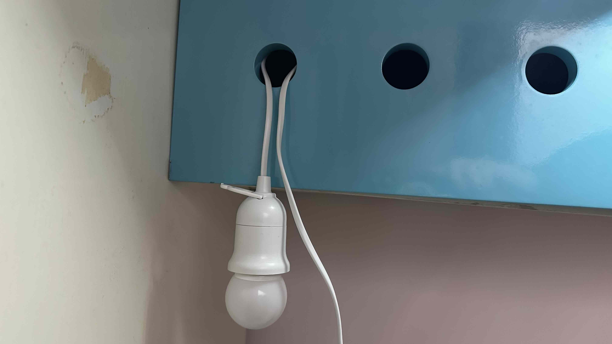
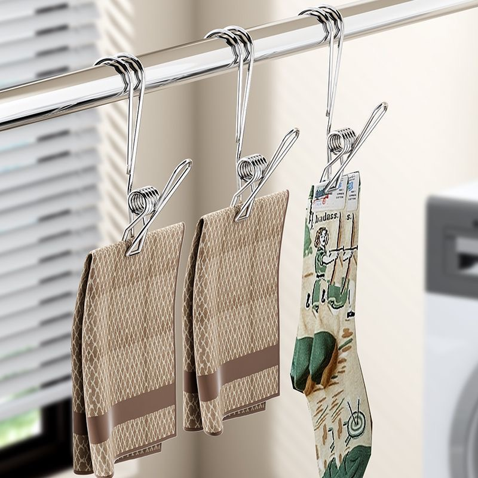
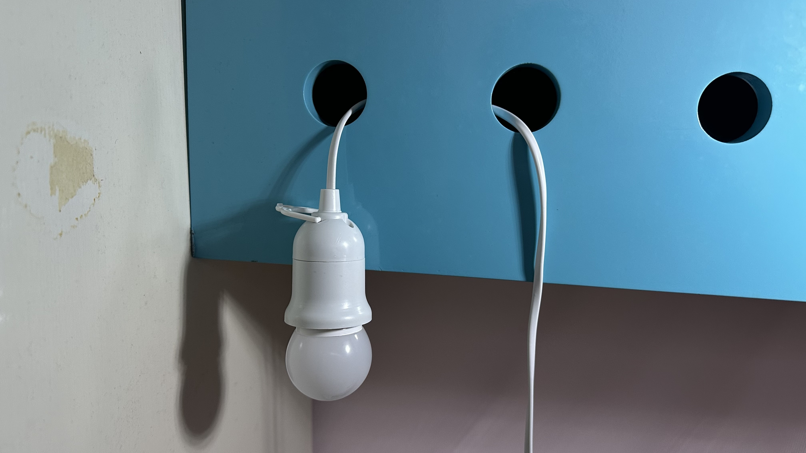

Eine Lampe am Regal aufhängen | Original, von KI übersetzt
Ich wollte meine Lampe weiter hinten auf dem Regal positionieren, um Ablenkungen beim Lesen zu minimieren.
Aufgrund der komplizierten Anordnung der Gegenstände auf meinem Bettregal beschloss ich, einen Haken von pinduoduo.com zu kaufen. Er kam nach ein paar Tagen an, aber nachdem ich ihn von der Paketstation abgeholt hatte, verlegte ich ihn irgendwo in meinem Zuhause. Dies zwang mich dazu, das gleiche Produkt erneut zu kaufen.
Heute kam mir plötzlich die Idee, einen anderen Ansatz auszuprobieren. Ich wickelte einfach das Kabel in eine X- oder U-Form und steckte den verdrehten Teil in das Loch. Auf diese Weise bleibt die Lampe am Regal befestigt, anstatt herunterzufallen.
Im Grunde wurde so ein gewisses Gleichgewicht erreicht. Die Lampe möchte aufgrund der Schwerkraft herunterfallen, also zieht sie am Kabel. Der obere Teil des Kabels wird jedoch durch den oberen Rand des Lochs gestoppt, sodass es nicht herausgezogen werden kann.
Dann versuchte ich, einen Bleistift zu Hilfe zu nehmen, um das Kabel zu fixieren, aber der Bleistift rutschte in das Loch. Als ich vorsichtig hineinschaute, stellte ich fest, dass sich Dinge im Regal befanden. Wie kamen sie da hinein? Zuvor hatte ich festgestellt, dass das Regal schwer zu öffnen war. Oh, tatsächlich kann es geöffnet werden.
Die Lösung wurde also einfacher. Da ich nicht möchte, dass das Kabel das Schließen des Regals verhindert, nutzte ich ein anderes Loch, um das Kabel herauszuführen.
Diese Erfahrung unterstreicht die nuancenreiche, kontextbewusste Problemlösung, die in alltäglichen Situationen erforderlich ist – etwas, von dem ich trotz der rasanten Fortschritte skeptisch bleibe, dass KI es vollständig nachahmen kann.
 Quelle: Selbst aufgenommen
 Quelle: Pinduoduo.com
 Quelle: Selbst aufgenommen